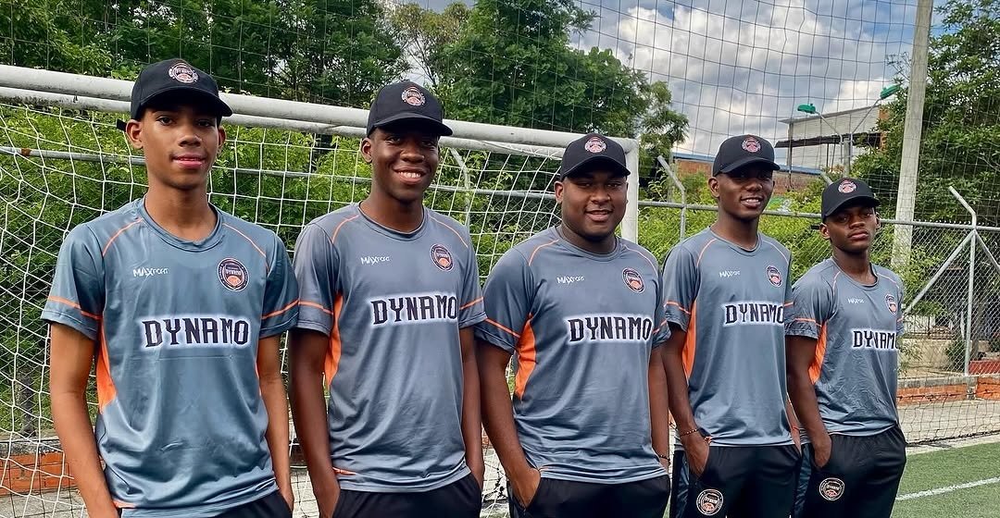

La Categoría Sub-12 del Club Deportivo Dynamo es una etapa crucial en el camino de formación de nuestros jóvenes futbolistas. En este nivel, los niños y niñas empiezan a consolidar su técnica individual, comprender tácticas más complejas y aplicar estrategias en equipo con mayor efectividad.
Las sesiones de entrenamiento están diseñadas para fortalecer habilidades como la precisión en el pase, la lectura de juego y la definición en el área. Además, se trabaja en aspectos físicos como la resistencia, la velocidad y la coordinación, adaptados a sus necesidades de crecimiento.
En esta categoría, también enfatizamos el desarrollo mental y emocional, enseñándoles a manejar la presión, tomar decisiones estratégicas y construir confianza en sí mismos.
La Categoría Sub-12 es donde los jóvenes talentos transforman su pasión por el fútbol en un compromiso sólido con su desarrollo deportivo y personal.
Nuestros Jóvenes Talentos
Bienvenidos a la Categoría Sub-12 del Club Deportivo Dynamo.
En esta etapa, conocerás a los jóvenes futbolistas que están alcanzando un nuevo nivel en su desarrollo técnico y táctico, mientras refuerzan su capacidad para trabajar en equipo y entender el juego en profundidad.
Los entrenamientos se centran en perfeccionar su precisión en el pase, el control del balón y la definición en situaciones clave, siempre en un ambiente que fomenta la toma de decisiones inteligentes y estratégicas.
Guiados por un equipo técnico experimentado, estos jugadores no solo mejoran en el campo, sino que también fortalecen valores esenciales como la perseverancia, el respeto y el trabajo en equipo, preparándose para brillar tanto en el deporte como en su vida diaria.
Liujohan Millan
Formador DT Categoría Sub-12 B
Gustavo Cajiao
Formador DT Categoría Sub-11 A / Sub-11 B
Andres Johannas Montaño
MedioCampista
Jhosuar Samuel Timaran Viveros
Defensa
Jhon Cundumi
Delantero
Matias Reyes
MedioCampista
Luis David Mesa
Arquero
Matias Caicedo
Delantero
Erick Samuel Ortiz
Delantero
Sergio Alejandro Moreno
Delantero
Joiner Hurtado
Delantero
Dilan Andres Moreno
Defensa
Edward Anchico
Delantero
Dilan Orobio
Delantero
Cristian Yesis Quinones Landazury
Arquero
Santiago Jaramillo
Delantero
Meikel Yessyd Castillo Valencia
MedioCampista
Santiago Angulo
Delantero
Salomon Cumber Portilla
MedioCampista
Emanuel Castro Valencia
Delantero
×
Galería:
Trofeos de la Categoría Sub-12
Estos son los logros más destacados de la categoría Sub-12, fruto del esfuerzo, dedicación y pasión por el fútbol.
Liga Vallecaucana
Detalles
Años ganados: 2024
Subcampeonatos:
Ubicación: Valle del Cauca
Torneo Las Américas
Detalles
Años ganados: 2022
Subcampeonatos:
Ubicación: Colombia
Copa Bon Bon Bum
Detalles
Años ganados:
Subcampeonatos:
Ubicación: Colombia
Nuestros Jóvenes Talentos en Acción
Disfruta de los momentos más destacados de los jóvenes futbolistas de la Categoría Sub-12.
Cada imagen es un testimonio de su dedicación, crecimiento y amor por el fútbol mientras perfeccionan sus habilidades técnicas y tácticas.
Estos recuerdos reflejan su espíritu competitivo, el compañerismo entre compañeros y su constante esfuerzo por superar nuevos desafíos, consolidándose como una pieza clave en el futuro de nuestro club.

×
¿Qué se enseña en la Categoría Sub-12?
En la categoría Sub-12, llevamos el entrenamiento a un nivel intermedio, enfocándonos en el desarrollo técnico, táctico y mental, preparando a los jóvenes para enfrentar retos mayores en su trayectoria futbolística.
Técnica Refinada
Fortalecemos habilidades avanzadas como el regate, precisión en los pases y remates en movimiento.
Visión Táctica
Enseñamos a los jugadores a leer el juego y anticiparse a las acciones del rival.
Trabajo en Equipo
Fomentamos la cooperación y el liderazgo para fortalecer la dinámica del grupo.
Competitividad Saludable
Motivamos a los jugadores a competir con respeto y compromiso en cada partido.
Capacidades Físicas
Incrementamos la resistencia, fuerza y coordinación para su desarrollo físico.
Creatividad en el Juego
Incentivamos soluciones innovadoras en el campo para superar desafíos tácticos.
¿Quieres formar parte de la familia Dynamo?
Completa la información y prepárate para escribirnos directamente por WhatsApp.